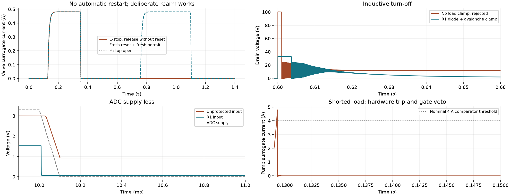

48 required scenarios pass; 6 unsafe controls detected. Physical commissioning and construction release remain outstanding.
Open four-sheet PDF | Assumptions and reproduction | Scenario results | Detailed measurements

Sheet 1
Sheet 2
Sheet 3
Sheet 4